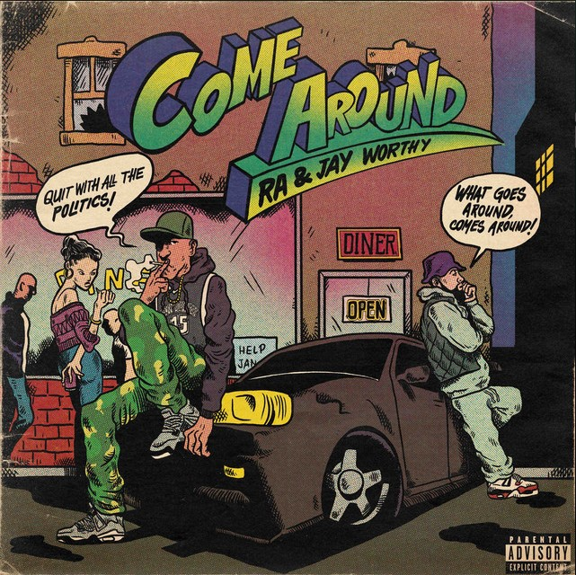

LATEST: TAKING CHANCES VOL. 2✦14 TRACKS✦BAGGAGE✦TOKYO STYLIN'✦POWER PLAY✦OFFICIAL MERCH AVAILABLE✦NEW JERSEY → OKINAWA → WORLDWIDE✦RA THA GOD✦LATEST: TAKING CHANCES VOL. 2✦14 TRACKS✦BAGGAGE✦TOKYO STYLIN'✦POWER PLAY✦OFFICIAL MERCH AVAILABLE✦NEW JERSEY → OKINAWA → WORLDWIDE✦RA THA GOD✦
01 / 音楽 / DISCOGRAPHY
THECATALOG音楽 / MUSIC ARCHIVE
Albums, EPs and singles from Ra Tha God.

COME AROUNDFEAT. JAY WORTHY • 2025RA // TOKYO HI-FI
NOW SPINNING / RA THA GOD
TAKING CHANCES VOL. 2
Play Ra directly through Spotify. Scroll the catalog inside Spotify or open the full album in the app.
渋谷 RA THA GOD 東京 MIDNIGHT LINE 音楽 映画
02 / 映画 / RA CINEMA
NOWSHOWING映画 / RA CINEMA
Pick a film. Every card is ready to play.
OFFICIAL VIDEO CATALOG
BAGGAGE • NO LOVE LOST • LATE NIGHT RUN • POWER PLAY • LAYOVER IN TOKYO • TIME 2 GRIND
VIEW EVERY VIDEO ↗OFFICIAL GOODS 東京店 WORLDWIDE RA THA GOD
03 / 店 / OFFICIAL GOODS
OFFICIALGOODS東京店 / TOKYO STORE
Official pieces built from the music.
RA THA GOD東京店 // OFFICIAL STORE
04 / 写真 / PHOTO ALLEY
REALLIFE写真 / PHOTO ARCHIVE
Ra, friends, movement, and everything around the music.
05 / WHO IS RA? / ラ・ザ・ゴッド
THE STORYSO FARWHO IS RA THA GOD?
A New Jersey native whose musical identity was shaped thousands of miles from home in Okinawa, Japan.
Ra Tha God emerged from Okinawa with a sound rooted in ambition, confidence and late-night luxury. His music moves between smooth melody and sharp rap precision, carrying an international perspective built through distance and discipline.
His catalog includes Taking Chances Vol. 1, the 14-track Taking Chances Vol. 2, and collaborations with Young Deji, Jay Worthy and producer K.Fisha.
NEW JERSEY → OKINAWA → WORLDWIDE
06 / CONTACT / 連絡
TAPINBOOKINGS / BUSINESS / COLLABORATIONS
BOOKINGS • COLLABORATIONS • PRESS • BUSINESS
EMAIL RA ↗